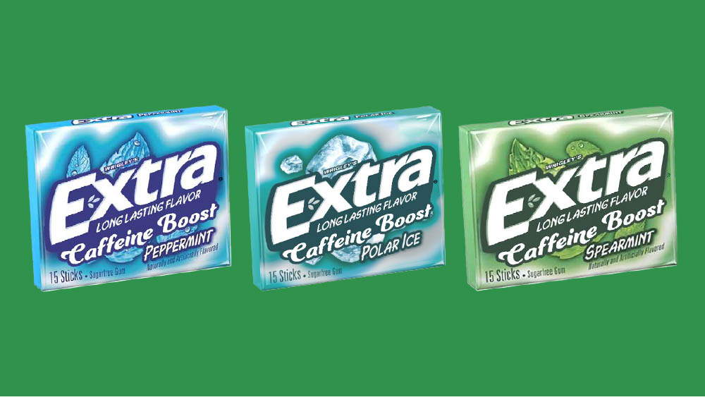
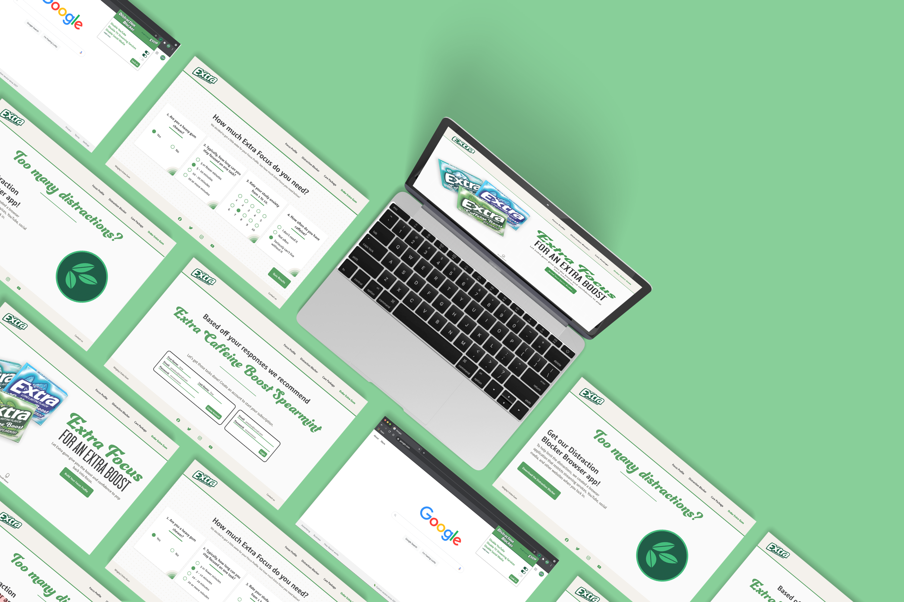
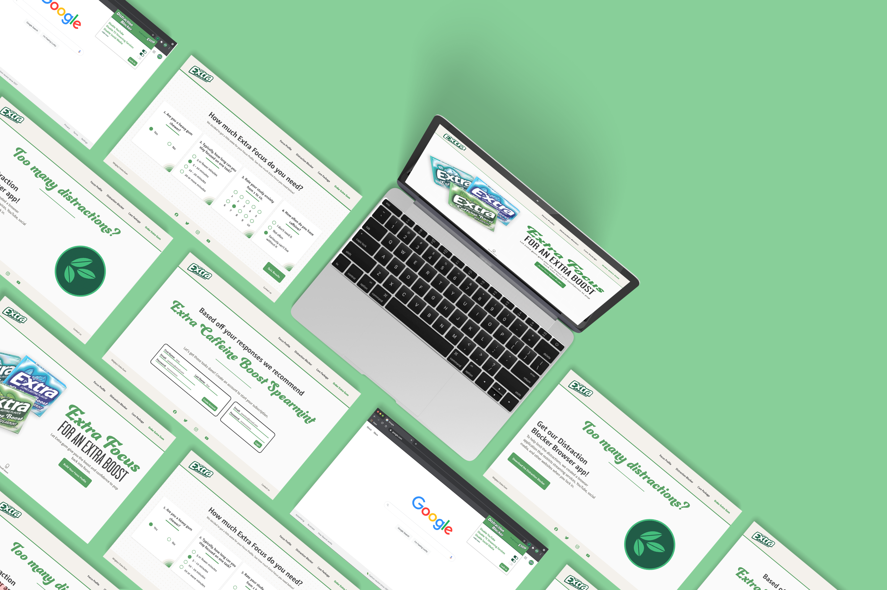

Art Direction
Wrigley's Extra Gum
The Problem
People are not thinking about gum. Coming off five consecutive years of $ growth, in 2020, EXTRA US (the category leader) has seen sales significantly impacted by COVID-19. EXTRA needs work that clearly communicates how gum fits into (and possibly fuels) people’s daily lives.
The Solution
We found a commonality between Extra and students: they're both struggling to adapt to the new norm created by COVID-19. Students can be easily distracted and unmotivated to make it through the semester when much of it is online.
Since gum is proven to improve concentration, we created "Extra Focus," an intiative that helps students build of maintain good study habits and encourage their friends to do the same.
The Deliverables
 
